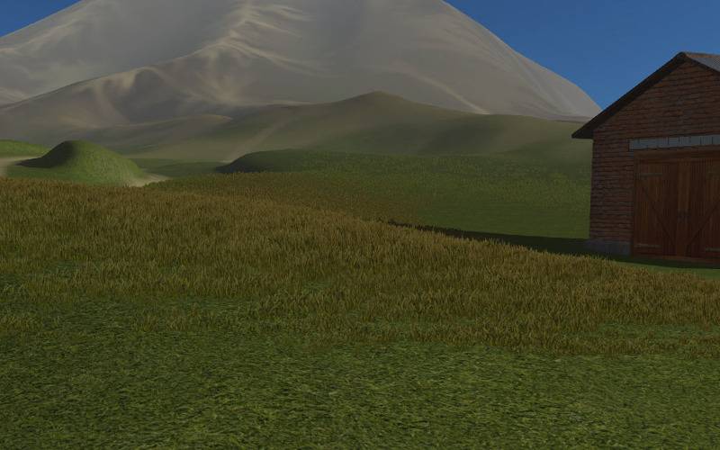
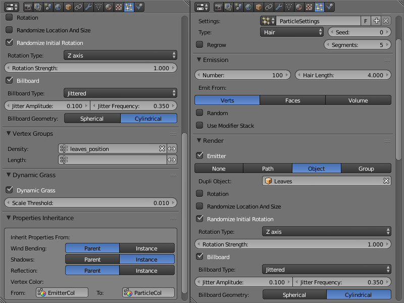

粒子系统.实例化¶
一个粒子系统可以用于创建多个物体的副本 （所谓的实例）。这种技术简化了场景创作，与使用单个物体相比可以缩短加载时间和内存消耗。

使用粒子系统实例化有一定的局限性，如：
粒子系统内的物体的移动和动画是不允许的。
粒子系统内的物体是没有父级关系的，除了 dupli-groups。
非网格物体的实例化是不可能的。
粒子系统设置¶

激活¶
在发射器创建
Hair类型的粒子系统。在
Render面板中选择Object（或Group）渲染类型。在
DUPLI Object字段（或在DUPLI Group字段）选择用于实例化的物体（或物体组）。支持本地和链接的物体（或组）。
建议的额外设置
为了在视口中显示正确的尺寸，设置
Emission > Hair Length和Render > Size参数为1.0。
{kind=link}
显示设置¶
Render > Use Count
该选项可用于粒子物体组。当启用时，用于设置一个组中的物体的相对数的界面变得可见。该引擎不会重现某些类型的物体的确切位置。
Render > Randomize Location and Size
该选项使随机化的位置和对象的大小。如果启用引擎产生粒子物体随机坐标和大小（仅限于±25％范围内）。如果禁用，粒子物体的准确坐标和尺寸在导出后使用。
Render > Randomize Initial Rotation
这个选项随机化由
Rotation Type限定的轴线的物体的旋转。如果启用，引擎产生的粒子随意旋转角度。如果禁用，转动使用Rotation面板设置。
Render > Rotation Type
随机物体的旋转轴（属性时可用
Render > Randomize Initial Rotation启用）。有两个选项：
Z axis- 物体是随机绕垂直Z轴旋转
Random axis- 物体是随机绕随机轴线旋转默认值是
Z axis
渲染>旋转强度
系数限定随机旋转角的范围 - 从朝着摄像机的方向计数。
Render > Randomize Initial Rotation复选框勾选的时候被启用。例子：
旋转强度= 1- 角度将躺在内 \([-\pi, \pi]\) 范围
旋转强度= 0.5- 角度将躺在内 \([-0.5 \cdot \pi, 0.5 \cdot \pi]\) 范围
旋转强度= 0.1- 角度将躺在内 \([-0.1 \cdot \pi, 0.1 \cdot \pi]\) 范围默认值是1。
渲染>广告牌
启用对粒子的广告牌。默认情况下禁用。
渲染>广告牌类型
布告板类型。在
Render > Billboard选项被启用时可用。三种类型可供选择：
Basic- 简单片面地产生广告牌：粒子将与他们的前面转向观察者
Random-Random- 随机双面产生广告牌：粒子将被更多地开启他们的前面或后面面向观察者更少的用边来对着观察者;也将有一个小的随机转;这种模式是专门为草实例化
Jittered-Jittered- 片面产生广告牌沿着其转动到观察者的平面波浪粒子;这种模式是专为树叶的实例化默认值是
Basic。
Render > Jitter Amplitude
系数限定了粒子振荡幅度。由
Render > Billboard Type菜单中选择Jittered类型时可用。此参数是越大，越大的振幅。缺省值是0。
Render > Jitter Frequency
粒子振荡频率单位赫兹。由
Render > Billboard Type菜单中选择Jittered类型时可用。缺省值是0。
Render > Billboard Geometry
广告牌旋转方式（
Render > Billboard复选框勾选时该选项可用）。两种类型可供选择：
Spherical- 球形广告牌即粒子完全面向观察者和他们的旋转是无限的;
Cylindrical- 圆柱形广告牌即粒子只绕垂直Z轴旋转;默认值是
Spherical。
动态草设置¶
Dynamic Grass
此选项可启用动态小草渲染模式。默认情况下禁用。
Dynamic Grass > Scale Threshold
最小尺寸为动态的草粒子。更小的粒子也不会被渲染。如果启用了
Dynamic Grass的选项。
继承设置¶
属性继承>风弯曲
粒子继承了
Wind Bending设置：
Parent- 从发射器继承
Instance- 从粒子物体本身继承默认值是
Parent。
属性继承>阴影
通过粒子继承阴影设置：
Parent- 从发射器继承
Instance- 从粒子物体本身继承默认值是
Parent。
属性继承>反射
通过粒子继承反射设置：
Parent- 从发射器继承
Instance- 从粒子物体本身继承默认值是
Parent。
属性继承>顶点颜色
继承发射器顶点颜色。包含两个字段：
From- 发射器的现有顶点颜色名称
To- 粒子现有的顶点颜色名称默认没有继承。
草地¶
物体的实例化可用于可视化各种草。在这种情况下，草在相机在地形上移动时，相机靠近的时候渲染。
{kind=link}
激活
在一个独立的平面物体创建一个粒子系统再物体实例化。启用
Dynamic Grass选项。为所谓的地形材质启用
Terrain Dynamic Grass选项。
设置
建议创建具有少量的平面（例如3）对应于所需草的级联（例如100，150和250米）的尺寸。
对于景观的 材质，当 Terrain Dynamic Grass 选项启用时，以下文本字段被激活：
- 动态草尺寸（R）
景观网格的顶点颜色图层名称其目的是为修改草大小。草的大小（即高度）由灰色色调定义 - 亮颜色草越高。
- 动态彩色草（RGB）
地形网格的顶点色层的名字是用作草的着色。顶点颜色与草材质颜色相乘。为草材质的漫反射纹理的
Influence > Blend参数应该有Multiply值。
用这样的名字顶点颜色层应在景观网格存在。
此外，还建议禁用发射器（的 Render > Emitter 选项）的渲染。
{kind=link}
树叶¶
实例化适合很好的渲染树的叶子，获得较好的层级显示。

激活
在 Particle system setup -> Activation 部分描述执行（见上文）。在这种情况下，树是发射器然后叶子和小分支是粒子。
此外，以下的操作可用于发射器来执行：
创建顶点组，其包括在其上的粒子将被放置的顶点
创建树的风弯曲参数和叶子顶点着色层
创建顶点着色层由粒子继承（例如它可以用于着色的粒子）
设置
随机旋转设置
如果 初始随机Rotation 复选框被启用，则建议选择垂直轴随机旋转 - Z axis （通过使用 Rotation Type 菜单）。该 旋转强度 值可随意设定。
布告板设置
建议启用广告牌，设置其类型为 Jittered （通过使用 Render > Billboard Type 菜单），并使其球形 - Spherical （通过使用 渲染>广告牌Geometry 菜单）。该 渲染>抖动Amplitude 和 渲染>抖动Frequency 值可随意设定。
粒子位置设置
建议选择从 Emission > Emit From 菜单中的 Verts 值，并选择发射器的顶点组（在 Vertex Group > Density 字段）定义粒子的位置。请注意，在 Render > Randomize Location and Size 复选框应禁用。
风效果设置
建议从发射器启用继承设置 - 在 Properties Inheritance > Wind Bending 菜单选择 Parent 。在 Object 面板为发射器启用 Wind Bending 再设置弯曲参数。对一颗树指定 Wind Bending > Main Bending > Angle 和 Wind Bending > Main Bending > Frequency 参数就够了，在 Wind Bending > Main Bending > Main Stiffness 指定顶点色名称用来弯曲。
顶点颜色继承设置
对于由粒子继承发射器的顶点颜色，则需要在分别在 Properties Inheritance > Vertex Color > From 和 Properties Inheritance > Vertex Color > To 同时指定发射器的顶点颜色名称。其结果是，发射器的顶点的颜色最接近的是粒子（在 From 字段指定）将被复制并传播到粒子的 To 顶点颜色层。
在 Properties Inheritance > Vertex Color > To 字段中指定的名称所产生的顶点颜色层所用的粒子的节点材质可用于它的着色和任何其他效果。
通过顶点组权重设置粒子的大小
为了创建粒子和顶点组权重的大小之间的依赖，在 Vertex groups > Length 字段选择所需的顶点组的名称。
影响可通过选定的顶点组中设定的权重进行调整。
{kind=link}